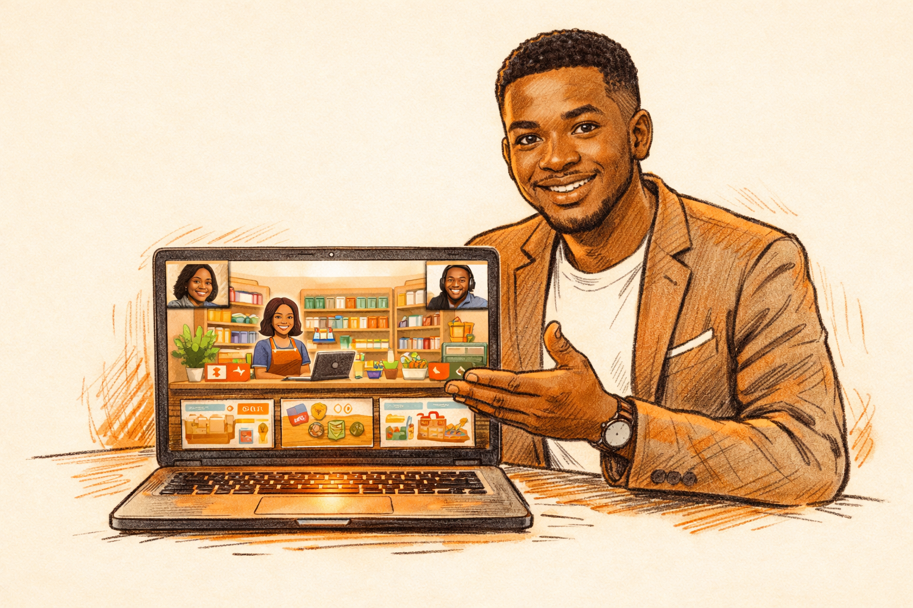

Share your screen on Zoom → switch to Tab 1. Game FIRST — hook them before explaining anything.
Open Customer Says Game
Thanks Timi. Before I show you the full platform, let me show you the fun part first.
A. Demo the game on screen (5 min) — ALWAYS DO THIS:
- "This is Customer Says. Real scenarios from Nigerian retail stores."
- Play through 2-3 scenarios yourself, narrating your thinking
- "See — customer says 'I'll think about it.' Which response keeps the sale alive?"
- Pick the right answer: "THAT one. Because you're not pushing — you're asking what's really holding them back."
- Pick a wrong answer on purpose: "If I pick this one — see what happens? Customer walks. That's the ₦25K gone."
The reason this works is staff can feel it. They've all had that moment where a customer said "I'll think about it" and they just watched them leave. This gives them the words.
Room is buzzing after the game? Don't kill the energy with curriculum slides. Skip B, go straight to C (bot demo). Say: "Let me show you how staff actually use this day to day."
B. Course Outline walkthrough (3 min) — gives structure but not essential if time is tight
B. Walk through Course Outline (3 min):
- Point to the module cards
- "Module 1 is Customer Engagement — the foundation. This is where those 3 upstream problems Timi mentioned get fixed."
- "Each module has missions. One mission = 10 minutes on their phone. Monday, Wednesday, Friday."
- "After each mission there's a quiz — and that's what I want to show you now."
The lessons are on the website. But the quizzes, the games, the tracking — that runs through a bot on Telegram. Let me show you.
Switch to Tab 3. Show the bot in Telegram on your screen. Type /start.
Open @prlpuma_bot
C. Demo the bot LIVE (7 min) — THIS IS THE CORE:
- Show the welcome message → single menu with quizzes + games
- "Staff open the bot, tap Start, and see this. Quizzes for each mission area. Games to practise what they learned."
- Tap a quiz (Mission 1: Foundation). Narrate:
- "First they get context — a short teaching moment"
- "Then the question. 30 seconds to answer."
- "If they get it wrong — look — it doesn't just say 'wrong.' It explains WHY and links to the lesson."
- "If they get it right — streak builds, keeps them motivated."
- Answer 2-3 questions, get at least one wrong on purpose
- "At the end, score + review. They can retry, or tap a lesson link for the topics they missed."
- Show the exit button: "And if someone needs to stop mid-quiz — they tap exit. Never trapped."
Everything is private. Each person's quiz is between them and the bot. Nobody sees anyone else's score unless they choose to share it.
D. Game buttons tour (1-2 min) — only if energy is still high and time allows
D. Quick mention of other games (1-2 min):
- Tap a game button from the bot menu
- "These open right in Telegram. Customer Says — you just saw it. Build the Basket teaches cross-selling — turns a ₦35K sale into ₦48K. The Approach trains timing and openers."
- "Staff can play anytime — on break, on the commute. It's practice, not homework."
E. Weekly report (2-3 min) — can defer to Discussion if someone asks "how do we track this?"
E. Management view (2-3 min):
Switch to Tab 4. Scroll through the report.
Open Weekly Report
And this is what YOU get. End of day — a report lands showing who's active, quiz scores, which topics are tripping people up. Two minutes to read. You're not refreshing a dashboard — it comes to you.
So: staff learn through the bot — quizzes, games, bite-sized lessons. Manager checks the weekly report. That's the whole system.
Now transition to hands-on. Don't rush this line — it's the bridge.
Now — instead of me telling you about it, let's let everyone try it themselves. Phones out.